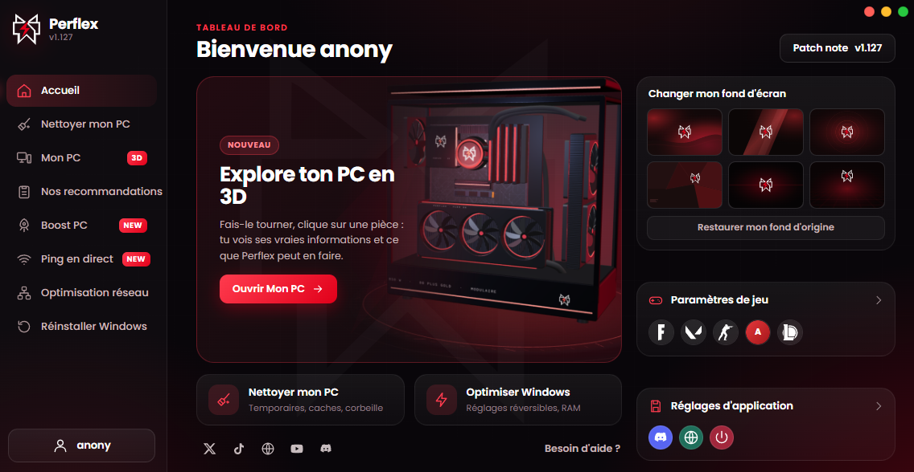

Nettoyer
8 zones analyséesFichiers temporaires, cache Windows Update, miniatures, navigateurs, Discord, shaders GPU, corbeille, DNS. Jamais vos documents.

Nettoyage réel, optimisations réversibles, RAM libérée, matériel détaillé. Une seule application, gratuite.
Glissez pour tourner · cliquez une pièce pour zoomer
01Fonctions
Fichiers temporaires, cache Windows Update, miniatures, navigateurs, Discord, shaders GPU, corbeille, DNS. Jamais vos documents.
Carte mère, BIOS, processeur, RAM, carte graphique, disques, écrans, réseau. Avec la charge qui bouge en direct.
Plan Performances ultimes, mode jeu, Game DVR, priorité au premier plan, souris. Chaque réglage mémorise sa valeur d’origine.
Vide la mémoire inactive. Rien n’est fermé. Une liste des programmes gourmands permet d’en fermer, sans toucher à ceux de Windows.
Ce qui se lance avec Windows, c’est vous qui décidez. Un point de restauration peut être créé avant de tout appliquer.
Fortnite, Valorant, CS2, Apex Legends, League of Legends, Call of Duty, Overwatch 2, Rocket League, GTA V, Minecraft, Roblox.
02Sécurité
Avant de toucher à un réglage, Perflex note sa valeur d’origine. Un interrupteur, et tout revient comme avant.
03Installation
Cliquez sur « Télécharger » et enregistrez Perflex.Setup.1.125.0.exe.
Double-clic, acceptez la demande d’autorisation de Windows, choisissez le dossier d’installation.
Ouvrez Perflex, lancez l’analyse dans « Nettoyer mon PC », puis appliquez les recommandations.
v1.125.0 · 78 Mo · Windows 10 / 11
Gratuit · sans compte
9eb0d8bc338a094ff3a9f38647c2a6cc8f8517c15ba891538b454ba8ff3ab1ab
Windows affiche un avertissement ? L’installateur n’est pas encore signé : SmartScreen peut afficher « Windows a protégé votre PC ». Cliquez sur « Informations complémentaires », puis « Exécuter quand même ». Comparez l’empreinte ci-dessus avec celle du fichier téléchargé si vous voulez vérifier.
04FAQ
Oui. Le téléchargement et l’utilisation sont gratuits, sans compte ni abonnement.
Windows 10 et Windows 11. Les fonctions de nettoyage et d’optimisation sont propres à Windows : il n’existe pas de version Mac ou Linux.
Oui. Chaque optimisation enregistre la valeur d’origine avant de la modifier. Remettez l’interrupteur sur « off » pour la restaurer. Un point de restauration Windows peut aussi être créé avant « Tout appliquer ».
Certains réglages touchent au système et demandent les droits administrateur. Fermez Perflex, faites un clic droit sur son icône et choisissez « Exécuter en tant qu’administrateur ».
Seuls des dossiers de cache et de fichiers temporaires connus sont vidés (temporaires, navigateurs, Discord, corbeille…). Vos documents, mots de passe et cookies ne sont pas concernés, et les fichiers en cours d’utilisation sont ignorés.
Paramètres de Windows, « Applications », « Applications installées », puis Perflex et « Désinstaller ».